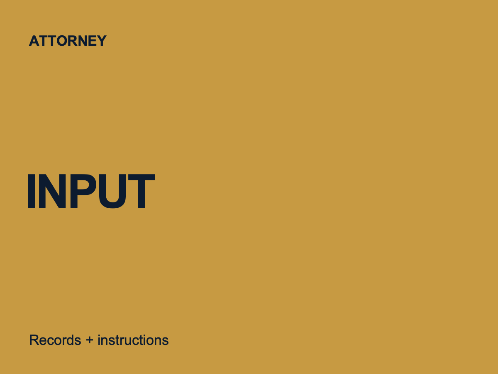
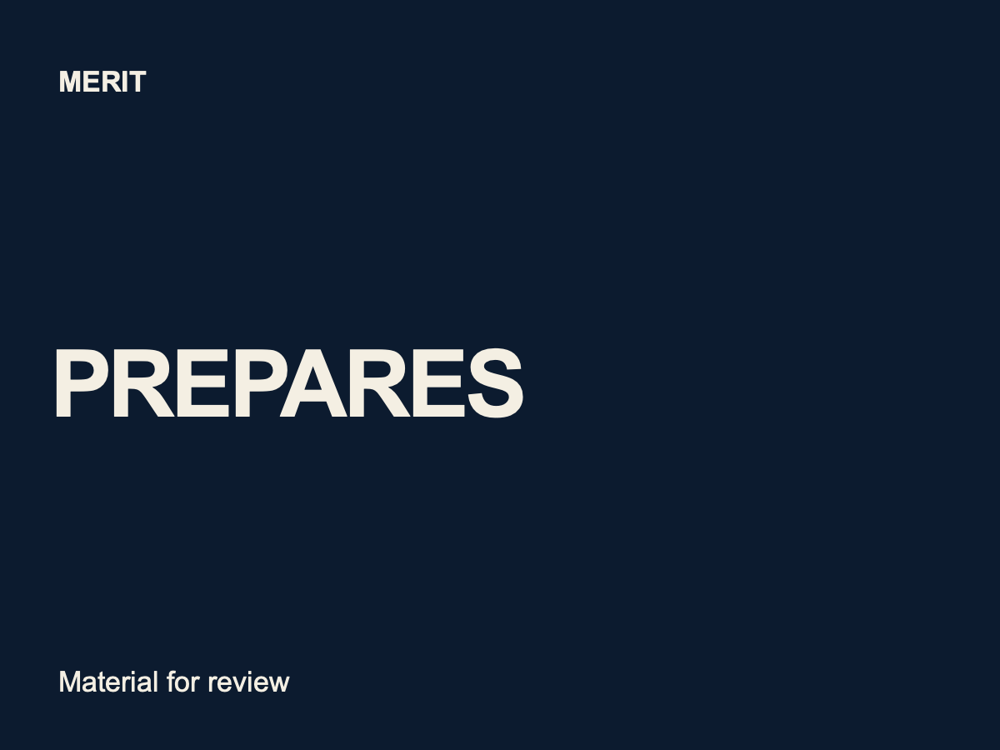
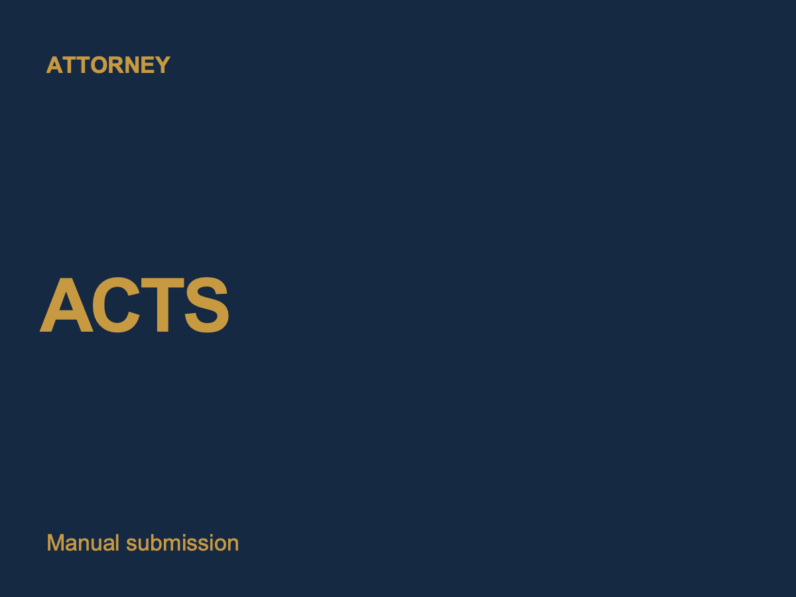

Research with sources
Merit prepares a research draft with sources for the attorney to open, check, and evaluate.
Merit AI Solutions is an AI Legal Associate for Minnesota solo attorneys and firms with 2–6 attorneys. It is an AI-assisted preparation system. It is not a lawyer, employee, or substitute for attorney judgment.



Provide the records and instructions for one task. Merit prepares the material. The attorney checks every authority, fact, date, and document before deciding what to use.
See the work and limitsReview instructions
Fictional records
Known dates
Research draft
Source list
Open questions
Facts and sources
Dates and rules
Final document
Merit prepares a research draft with sources for the attorney to open, check, and evaluate.
Merit prepares a draft from attorney-provided records and instructions and returns it for attorney revision.
Merit organizes parties, dates, documents, and open questions for attorney review.
Merit prepares court-filing documents for review. The attorney submits them manually.
Merit prepares a proposed calculation. The attorney independently verifies every deadline.
Merit prepares material for review. The attorney remains responsible for the representation and manually files, sends, serves, or submits final work.
Read about attorney controlThese are component- and path-specific results. They do not establish broad legal accuracy, deadline accuracy, or client outcomes.
Read the dated testing recordThe first three attorneys may receive one pilot month at no charge. Eligibility and fit are confirmed during the discovery call. No post-pilot pricing or fixed setup time is stated here.
Discuss the pilotDr. Raymond Diaz, Founder, is a Minnesota resident with a background in education, curriculum development, and building carefully reviewed professional systems.
About Merit AI SolutionsChoose research, drafting, intake organization, filing-document preparation, or a proposed deadline calculation. The call focuses on that task and its review steps.
Book a 30-minute discovery call